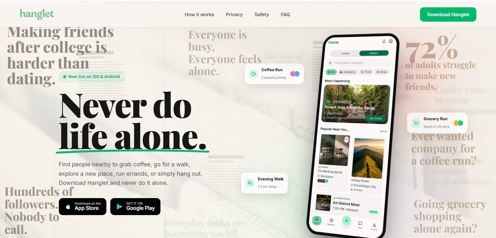
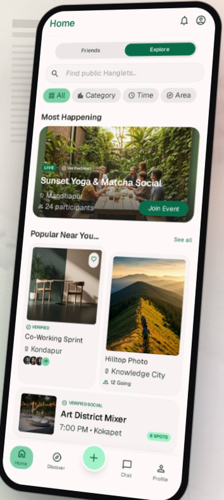

Hanglet
An app for finding people nearby to do ordinary things with. Coffee, a walk, a market run, an event on a weeknight.
- Role
- Co-founder & Product Manager
- Timeline
- May 2026 to present
- Type
- B2C · Consumer · 0→1
- Live
- hanglet.com, iOS and Android

hanglet.comLive on iOS and Android
What I noticed
Most people have enough friends and still end up doing things alone. Not the big things. The ordinary ones.
I started from a behaviour rather than a feature idea. The first question was not what to build but whether the friction was real, frequent, and worth someone changing a habit over. That distinction decided everything downstream. If the problem was occasional or mildly annoying, no amount of product quality was going to earn a place in someone's week.
So the first month went into trying to disprove it rather than building.
Being alone is usually framed as having no friends. For most adults after college it is structural. School and university supplied proximity and repetition for free. Work supplies neither. You can have hundreds of followers and nobody to call on a Sunday.
Frame it as a problem, not a product
Writing the problem statement first stops you defending a solution you already like. The version I kept had to name the person, the moment, and the cost of the current workaround.
30+ conversations before a line of code
I ran 30+ problem-discovery conversations and a competitor sweep. The goal was not validation. It was to find the version of the problem people described without being prompted, and to hear which workarounds they already paid for in time or awkwardness.
The insight that narrowed scope
Research is only useful when it kills options. The finding worth keeping was the one that made several planned features obviously unnecessary.
Position against the workaround
The competitor for a 0→1 consumer product is rarely another app. Here it is the group chat that never converts to a plan, and the decision to just stay in. Positioning had to beat those, not a category.
15+ initiatives, ranked on five axes
I scored 15+ initiatives on user value, business impact, engineering effort, strategic fit and growth potential. Anything that did not serve the core loop was pushed past the MVP line, however cheap it was to build.
Instrument before you argue
Google Analytics went in early across acquisition, activation, engagement and conversion, so disagreements about what was working could be settled with a funnel rather than an opinion.
Ship, read, cut, repeat
Backlog refinement, sprint planning, design and engineering coordination, sprint reviews, feedback-driven releases. The loop matters more than any single release inside it.
Who has this problem
I kept the persona set deliberately small. Two personas you can actually picture beat five you cannot, and a third is usually a sign the problem is not sharp enough yet. Each one is built around a trigger moment rather than a demographic. Age and job title are the least useful things about a user here.
What matters is when the problem bites, what workaround they already tolerate, and what it would take to make them change it. A persona that cannot tell you what to build is decoration.
30+ problem-discovery conversations, competitor research, and the workarounds people described without being prompted.
After college
Two to five years out of university, often in a new city for work. Has colleagues and a full follower count. Has nobody to call on a Sunday.
- The trigger moment
- Saturday morning with nothing in the calendar. Or wanting to try a place and running through a contact list that is full of people who would find the invitation strange.
- What they do today
- Stays in. Scrolls. Waits for colleagues to organise something. Calls friends in another city, which helps and does not solve it.
- What they actually want
- Not friendship. Company for the next two hours, with someone who also wanted to go.
- What stops them
- Meeting a stranger feels like effort and a small risk. Every nearby app they have tried signals dating or professional networking, and neither is what they are asking for.
- What would make them switch
- One low-stakes meet-up that actually happened. The bar is not a great experience, it is a non-awkward one where the other person showed up.
- Why they are first
- Highest frequency, least tolerable workaround, and a clear moment of onset. Leaving university, or moving for a job, reliably creates this need, which also makes this group findable at the moment the need appears rather than in general.
The drifted local
Has lived here for years. Still has friends. Does not have available ones.
- How their need differs
- P1 has no one to ask. P2 has plenty of people to ask and none of them are free. The shortage is availability, not connection.
- The trigger moment
- A weeknight, or a spontaneous idea on short notice. Friends have partners, children, commutes, or a different schedule entirely.
- What they do today
- Floats it in a group chat that never converts into a plan, then goes alone or does not go. More tolerable than P1's workaround, which is exactly why they are second.
- Where the MVP already works
- Same loop. Find something happening nearby, find someone going, go. No extra scope needed to serve them.
- Where it does not
- They think activity first, not person first. They arrive knowing what they want to do and only need company for it. That is a real gap I left open on purpose.
- Why they are second
- Serving two masters in a first release usually produces a product that is nobody's first choice. P2 gets carried by the overlap. Optimising for them would have meant building an events product, which is a different company.
The visitor
In the city for a few days or a few weeks. Business travel, a course, visiting family.
- Why they turn up anyway
- Nearby plus activities reads as things to do here. The positioning attracts them without meaning to.
- What they misunderstand
- They treat it as a travel or meetup app. Unintended users are the cheapest positioning feedback there is: what they assume the product is tells you what it is signalling.
- The risk they create
- They churn by design, and they make retention look worse than it is. They also thin out local density, because a visitor who matches with P1 and leaves has consumed supply without adding any.
- Decision
- Do not build for them, do not block them, and segment them out of retention reporting so they cannot quietly corrupt the metric everything else is judged against.
Anyone here to date
The group I decided not to build for. Naming them is what makes the other three personas mean anything.
- Why they are tempting
- Enormously larger market, clearer monetisation, and proven willingness to pay. Every product built on proximity, profiles and a connect button drifts here by gravity, whether or not anyone decides to.
- Why not
- The moment Hanglet reads as dating, P1 stops using it. The whole promise is that asking someone to get coffee carries no subtext. Dating intent changes safety expectations, gender balance, and what a profile is even for.
- What excluding them bought
- No swiping. No ranking that rewards attractiveness. Activity first, person second, so the profile answers what are you doing rather than what do you look like. Three features cut, and a much sharper answer to what this app is.
- What would change my mind
- Nothing about the dating market. The signal I would act on is the inverse: if a large share of successful meet-ups self-report as romantic, that means the positioning is failing, and the fix is in the product, not the strategy.
What I did to find out
30+ problem-discovery conversations, plus competitor and market research. I asked about the last time the problem happened rather than about the idea. People are reliable narrators of their past and unreliable predictors of their future behaviour.
Competitor research was about the shape of the market rather than a feature checklist. Almost everything adjacent is either dating, professional networking, or interest-group events. That gap is the whole opportunity, and it is also a warning: products keep landing in those three buckets because that is where the gravity pulls.
PRDs, user stories, acceptance criteria, user journeys, functional requirements, feature specifications.
- 30+
- Discovery conversations
- 15+
- Initiatives prioritised
- 8+
- A/B experiments run
- 10+
- Pages built and optimised
Nobody makes friends by trying to make friends. They make them by doing ordinary things, repeatedly, with the same people.
This is the finding that decided the product shape. An app that asks people to look for friends is asking them to admit something, and it competes directly with the feeling that they should already have some. An app that asks them to join a coffee run at four is asking almost nothing.
So the unit is the activity, not the person. That is why the product is built around a thing you can join rather than a person you can browse, and why the first screen answers what is happening near me rather than who is near me.
It also reframed success. A good outcome is not two people becoming friends on day one. It is a coffee run that happened, was fine, and made the second one easier. Friendship is the compound effect, not the feature.
If the insight is wrong, the symptom will be specific. People will meet once, enjoy it, and never come back, because a single shared activity was never the thing they actually wanted. That is a falsifiable claim, which is the only kind worth building on.
What I decided to build
The MVP had to prove one loop, not demonstrate a category. I ranked 15+ initiatives on user value, business impact, engineering effort, strategic fit and growth potential, then drew the line where the product could still stand up without the next twelve items.
The loop is four steps. See what is happening nearby, see who is going, join, go. Everything above that line served the loop. Everything below it was a reason to come back later, once the loop worked.
The hardest constraint in this category is density. A social product that depends on people nearby is worthless at low local scale, however good the software is. That pushed scope down and geography narrow: better to work properly in one area than to be technically available everywhere and empty in all of them.
Density has a harder half. Joining is easy and hosting is not, so the scarce side is the person willing to put a coffee run on the map at four o’clock and risk nobody coming. That is why creating sits in the middle of the navigation rather than behind a menu, and why the early work was about making hosting feel small rather than making joining prettier.
Discover public Hanglets nearby, host one, join one, and coordinate the plan. Four things. Everything else waited.
You can only build one. What do you choose?
There is no right answer here. The reasoning is the answer. Pick one and I will show you what I would argue for, and what it costs.
How the experience works
The home screen answers one question: what is happening near me, soon. It splits into Friends and Explore, filters by category, time and area, and leads with what is most active rather than what is newest. A Hanglet carries a host, a place, a time, and how many people are going, because those four facts are what someone needs to decide in a second.
Safety is a product surface here, not a policy page. Verified hosts and verified listings carry badges in the feed itself, at the moment the decision is made, rather than being buried in settings where nobody reads them.
I used Google Stitch to turn requirements and user journeys into high-fidelity UI concepts before engineering started, so arguments about flow happened on screens rather than in tickets. The build ran AI-assisted through prototyping, refinement, implementation and iteration.
A simplified walkthrough of the real flow rather than the shipped interface itself. The ordering is the argument: activity before person, and a plan before a conversation.

- User problem
- Nearby is not a filter anyone actually thinks in. People think in tonight, something quiet, close enough to walk.
- Product decision
- Filter by category, time and area, and lead the feed with what is most active rather than what is newest.
- Why
- In a density-constrained product the empty state is the real enemy. Sorting by activity hides thinness. Sorting by recency advertises it.
- User problem
- Deciding whether to walk into a room of strangers is a lot to ask from a title and a photograph.
- Product decision
- Every card carries host, place, time and how many people are going, with the join action on the card itself.
- Why
- Those four facts are what someone needs to decide in a second. Making them tap through to find out is a step that only loses people.
- User problem
- Meeting strangers from an app carries a real risk, and the people most exposed to it are exactly the people the product most needs to show up.
- Product decision
- Verified host and verified listing badges sit in the feed, on the card, at the moment the decision is made.
- Why
- Safety that lives on a policy page protects the company. Safety that lives on the card protects the user. Only one of those changes whether somebody taps join.
- User problem
- Joining is easy. Hosting is exposing. Nobody wants to put a coffee run on the map and watch nobody come.
- Product decision
- Create sits in the middle of the navigation, carrying the same weight as home.
- Why
- Hosts are the scarce side of this marketplace. A product that makes joining beautiful and hosting awkward eventually runs out of things to join.
What I chose not to build
The cut list is the part of a roadmap that actually says something. Anything that did not serve the core loop went below the line, including things that were cheap, popular in conversations, and easy to demo.
Swiping, public follower counts, and ratings of people. Cutting the swipe kept the product out of the dating category, which was the whole point. Cutting follower counts removed the incentive to collect people instead of meeting them. Cutting ratings avoided turning participants into scores, which is the fastest way to make hosting feel like a performance.
Before
Six steps to first value
- Landing
- Create account
- Verify email
- Complete full profile
- Browse
- First request sent
After
Three steps to first value
- Landing, showing real plans nearby
- Minimum profile, account deferred
- First request sent
Which three survive the first release?
Selected 0 / 3
How I would know it works
I implemented Google Analytics across acquisition, activation, engagement, conversion and behavioural funnels, and ran 8+ A/B experiments across onboarding, UX flows, messaging and product experiences. I also built the product site from scratch and optimised 10+ core pages with technical SEO and search analytics.
The framework matters more than any single number in it. Define the success threshold before the experiment, keep a guardrail that would make you roll back, and write down what would change your mind.
Completed meet-ups per active user per month. It only moves when the whole loop works, and it cannot be gamed by sign-ups or matches. A product that is good at producing matches and bad at producing meet-ups has not solved anything.
01
Activation
Share of new users who send a first request in session one. The metric everything else divides by, and the first number I would put in front of anyone.
02
Conversion
Requests that become confirmed plans, and confirmed plans that actually happen. The second number is the one nobody wants to measure and the only one that matters.
03
Retention
Day-7 and day-30 return, segmented to exclude visitors and read by cohort rather than in aggregate. One new city with no density will drag the whole curve down and tell you nothing about the product.
04
Guardrail
Reported discomfort or no-shows per completed meet-up. One bad experience costs more than ten good ones earn, so this can veto a release on its own.
What I learned, and what I would change
Density beats features. The version of this product that works properly in one neighbourhood is worth more than the version that is technically available everywhere and empty in all of them. Most of what I cut, I cut because it would not have mattered until there were enough people nearby for it to matter.
I would have picked a smaller geography sooner. Launching wide feels like ambition and behaves like dilution. Every empty feed is someone concluding the product does not work, and they are not wrong.
The second meet-up with the same person. That is the signal that the product has become more than a way to fill an afternoon. The condition is density: none of it is worth building until one area is reliably active.
Retention dropped after the first week. What would you investigate first?
Payment fraud decisioning, built around one north-star metric.